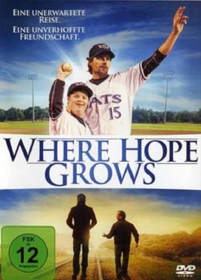

#8922 Where Hope Grows
 
 IMDB-Wertung: 6.6 / 10
IMDB-Wertung: 6.6 / 10  Metascore: 0
Metascore: 0 
Der ehemalige Baseball-Profi Calvin Campell hat mit Schicksalsschlägen zu kämpfen. Sein Leben erhält neuen Sinn, als er Produce trifft, einen jungen Verkäufer mit Down-Syndrom. Ihre Freundschaft erinnert Calvin daran, dass Hoffnung manchmal an unerwarteten Orten wächst.
Jahr: 2014
Dauer: 98 Minuten
FSK: 6
Land: USA Studio: LionsgateTonspuren: DD5.1 - ,
Untertitel:
Auflösung: 1080p (1920x800) Größe: 6277 MB
Genre: Drama, Familie
Regisseur: Chris Dowling
Drehbuch: Lloyd C. Douglas
Soundtrack: Kyle Newmaster
Darsteller:
- Kristoffer Polaha als Calvin
- David DeSanctis als Produce
- McKaley Miller als Katie
- Michael Grant als Colt
- William Zabka als Milton
- Brooke Burns als Amy
- Alan Powell als Franklin
 Danica McKellar als Susan
Danica McKellar als Susan- Kerr Smith als Officer Minniear
- Drew Cash als Eric
- J. Teddy Garces als Doctor Jones
- Chase Anderson als Jackson
- Ken Arnold als Steve Bookerson
- Rebecca Lines als Laura
- Robert Johnson als Mr. Beam
- Phil Russell als Police Officer
- Beth DiChiara als Extra
- Paul Cecil als Grocery Shopper (uncredited)
- Kate Duncan als Stadium Fan (uncredited)
- Brandon Stewart als Alcoholic (uncredited)
- Clyde Jones als Dexter
- Sonya Thaper als Nurse Meera
- Michelle J. Fine als Nurse Kristen
- Daniel Harrison Smith als Game Vendor
- Michelle Chalmers als Mrs. Beam
- J. Michael Breaux als Pastor Breaux
- Richard Hagerman als Rick
- Phillip DeLaney als Fan
- Jordan Skora als Extra
- Cody Crowe als Extra
- Loretta Gaudern als Extra
- Chris Gaudern als Extra
- Erica Dee Hector als Extra
- Gail Spurgeon als Extra
- Brooke Spurgeon als Extra
- Merwan Stevens als Extra
- Tara Bensing als Extra
- Maritza Portillo als Extra
- Amy Porras als Extra
- Laura Lowe als Extra
- Hye Hwang als Extra
- Steve Nichols als Extra
- Ronan Quinn als Extra
- Russell Hendricks als Extra
- Bob Florio als Extra
- Dave Moisan als Extra
- Mandy Ashby als Extra
- Kerry Drew Wilson als Extra
- Heather Harrigan als Extra
- Kim Gorski als Extra
Datei: X:\2014(N-Z)\Where Hope Grows (2014, FSK6, 1920x800).mkv seit 07.05.2018
Festplatte: HD 2013(I-Z)-2014(A-Z)
 Es gibt insgesamt 163 Filme in der Gruppe '2014(N-Z)'
Es gibt insgesamt 163 Filme in der Gruppe '2014(N-Z)'